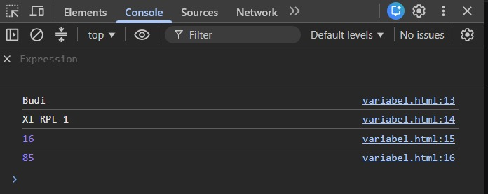
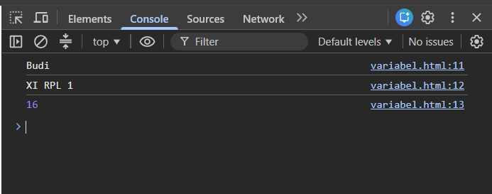
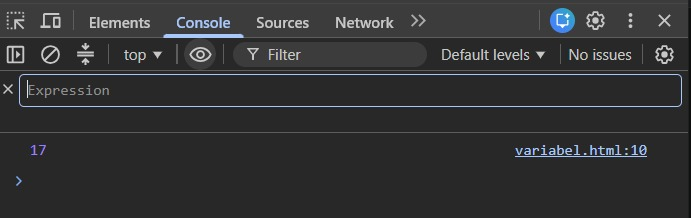
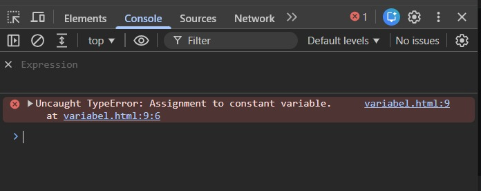
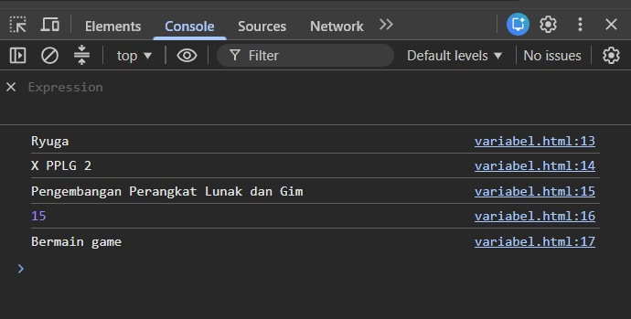
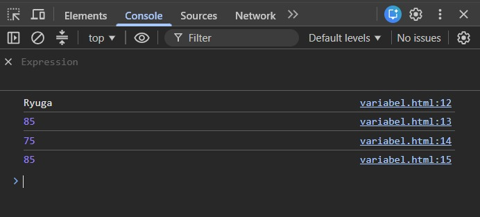
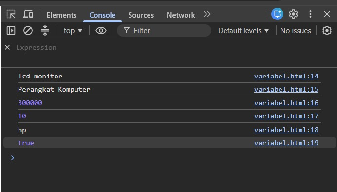

A. IDENTITAS PEMBELAJARAN
Mata Pelajaran: Dasar-Dasar Pengembangan Perangkat Lunak dan Gim
Materi: Variable pada JavaScript
Alokasi Waktu: 2 × 45 menit
Model Pembelajaran: Problem Based Learning / Discovery Learning
Metode: Eksplorasi, praktik, diskusi, tanya jawab, refleksi
B. TUJUAN PEMBELAJARAN
Setelah menyelesaikan kegiatan pembelajaran ini, peserta didik diharapkan mampu:
- Menjelaskan pengertian variable dengan bahasa sendiri.
- Menjelaskan fungsi variable dalam program.
- Membedakan let dan const secara sederhana.
- Membuat variable menggunakan JavaScript.
- Memberikan nama variable sesuai aturan penamaan.
- Menyimpan data berupa teks dan angka ke dalam variable.
- Menampilkan nilai variable menggunakan console.log()
- Membuat program JavaScript sederhana yang menggunakan beberapa variable.
- Menemukan dan memperbaiki kesalahan sederhana pada penggunaan variable.
C. PETUNJUK KESELAMATAN DAN KERJA
Dalam kegiatan praktik:
- Gunakan komputer/laptop dengan hati-hati.
- Jangan menghapus file milik teman.
- Simpan pekerjaan secara berkala.
- Jangan menyalin kode teman tanpa memahami fungsinya.
- Jika menemukan error, jangan panik.
- Baca pesan error dan diskusikan penyebabnya.
- Setiap anggota kelompok harus memahami hasil pekerjaan kelompok.[cite: 2]
D. APERSEPSI
Bayangkan kamu sedang membuat aplikasi data siswa.
Program perlu mengetahui:
- Nama siswa
- Kelas
- Umur
- Nilai
- Jurusan
Contohnya:
Nama siswa = "Budi" Kelas = "XI RPL 1" Umur = 16 Nilai = 85
Menurutmu, bagaimana cara menyimpan informasi tersebut di dalam program?
Tuliskan dugaanmu:

E. AKTIVITAS 1 - MENGAMATI
Perhatikan kode berikut[cite: 3]:
let nama = "Budi"; let umur = 16; let nilai = 85; console.log(nama); console.log(umur); console.log(nilai);
Jalankan kode tersebut menggunakan browser[cite: 3].
Pertanyaan
-
Apa yang ditampilkan pada Console?
Budi, 16, 85
-
Menurutmu, apa fungsi
nama,umur, dannilai?[cite: 3]Berfungsi sebagai pengenal atau nama variable untuk menyimpan data teks ("Budi") dan angka (16, 85). -
Apa yang terjadi jika kode berikut dijalankan?
console.log(nama);
Jawaban:[cite: 3]Menampilkan nilai dari variable nama yaitu "Budi" ke console."
-
Menurut dugaanmu, apa yang dimaksud dengan variable?[cite: 3]
Variable adalah wadah atau tempat penyimpanan data di dalam memori program.
F. AKTIVITAS 2 - MENGENAL VARIABLE
1. Apa itu Variable?[cite: 3]
Variable dapat dianggap sebagai tempat untuk menyimpan sebuah data agar data tersebut dapat digunakan kembali oleh program[cite: 3].
Contoh: let nama = "Andi";[cite: 3, 4]
Pada kode tersebut, terdapat[cite: 4]:
| Bagian | Fungsi |
|---|---|
let |
Membuat variable[cite: 4] |
nama |
Nama variable[cite: 4] |
= |
Memberikan nilai[cite: 4] |
"Andi" |
Nilai yang disimpan[cite: 4] |
G. AKTIVITAS 3 - PRAKTIK MEMBUAT VARIABLE
Buat file: variable.html[cite: 4]. Kemudian masukkan kode berikut[cite: 4]:
<!DOCTYPE html> <html> <head> <title>Belajar Variable</title> </head> <body> <script> let nama = "Budi"; let kelas = "XI RPL 1"; let umur = 16; console.log(nama); console.log(kelas); console.log(umur); </script> </body> </html>
Buka file tersebut menggunakan browser[cite: 4]. Kemudian buka: Klik kanan → Inspect → Console[cite: 5]
Hasil Pengamatan
Tuliskan hasil yang muncul pada Console[cite: 5]:
Kelas : XI RPL 1
Umur : 16

"H. AKTIVITAS 4 - EKSPERIMEN
Sekarang ubahlah program sebelumnya[cite: 5]. Ubah nilai nama, kelas, dan umur sesuai data kamu[cite: 5].
Pertanyaan
-
Apakah hasil pada Console berubah?[cite: 5]
Ya, berubah sesuai dengan data yang dimasukkan.
-
Bagian kode mana yang kamu ubah?[cite: 5]
Bagian nilai string pada variable nama dan kelas, serta nilai angka pada variable umur.
-
Mengapa program dapat menampilkan data yang baru?[cite: 6]
Karena program membaca nilai terbaru yang tersimpan di dalam masing-masing variable saat dieksekusi.
I. AKTIVITAS 5 - VARIABLE UNTUK MENYIMPAN BERBAGAI DATA
JavaScript dapat menyimpan berbagai jenis data[cite: 6]. Perhatikan[cite: 6]:
let nama = "Andi"; let umur = 17; let tinggi = 170; let aktif = true;
Identifikasi data tersebut[cite: 6]:
| Variable | Nilai | Jenis Data |
|---|---|---|
| nama | "Andi" | Teks (String)[cite: 6] |
| umur | 17 | Angka (Number)[cite: 6] |
| tinggi | 170 | Angka (Number)[cite: 6] |
| aktif | true | Boolean (True/False)[cite: 6] |
Kesimpulan
Data yang ditulis menggunakan tanda kutip seperti "Andi" merupakan data: Teks (String)
Sedangkan 17 merupakan data: Angka (Number)[cite: 6]
J. AKTIVITAS 6 – MENGENAL let DAN const
Perhatikan kode berikut[cite: 7]:
let umur = 16; umur = 17; console.log(umur);
Jalankan program tersebut[cite: 7]. Hasil: 17

"Kesimpulan Sementara
Sekarang coba[cite: 7]:
const nama = "Budi"; nama = "Andi"; console.log(nama);
Apa yang terjadi? Terjadi error (TypeError: Assignment to constant variable) karena nilai const tidak dapat diubah setelah dideklarasikan.

"Lengkapi tabel berikut[cite: 7]:
| Keyword | Nilai dapat diubah? | Kegunaan sederhana |
|---|---|---|
| let | Ya[cite: 7, 8] | Untuk data yang masih mungkin berubah[cite: 8] |
| const | Tidak[cite: 7, 8] | Untuk data yang tidak perlu diubah / konstan[cite: 8] |
Contoh penggunaan:
let nilai = 80; nilai = 90; const namaSekolah = "SMKN 1 Garut";[cite: 8]
K. AKTIVITAS 7 - ATURAN PENAMAAN VARIABLE
Perhatikan nama variable berikut[cite: 8]: let nama;, let namaSiswa;, let nama siswa;, let umur2;[cite: 8]
Beberapa aturan dasar[cite: 8]:
Diperbolehkan[cite: 8, 9]: let nama;, let namaSiswa;, let nilai1;[cite: 8, 9]
Tidak diperbolehkan[cite: 9]: let 1nama;, let nama siswa;, let nama-siswa;[cite: 9]
JavaScript membedakan huruf besar dan kecil (case-sensitive)[cite: 9]:
let nama = "Andi"; console.log(nama);
Berbeda dengan: console.log(Nama);[cite: 9]
L. AKTIVITAS 8 - MANA YANG BENAR?
Berikan tanda ✓ pada nama variable yang benar dan tanda X pada nama variable yang salah[cite: 9].
| No. | Nama Variable | ✓ / X |
|---|---|---|
| 1 | nama | ✓ |
| 2 | namaSiswa | ✓ |
| 3 | nama_siswa | ✓ |
| 4 | 2nama | X |
| 5 | nama siswa | X |
| 6 | nilaiAkhir | ✓ |
| 7 | nilai1 | ✓ |
| 8 | nilai-akhir | X |
| 9 | Alamat | ✓ |
| 10 | alamatSiswa | ✓ |
Perbaiki nama variable yang salah[cite: 9, 10]:
2nama Menjadi: duaNama / nama2[cite: 10]
nama siswa Menjadi: namaSiswa / nama_siswa[cite: 10]
nilai-akhir Menjadi: nilaiAkhir / nilai_akhir[cite: 10]
M. AKTIVITAS 9 - TANTANGAN DATA DIRI
Buat program JavaScript yang menyimpan data diri menggunakan variable (minimal 5 variable)[cite: 10, 11].
Tugas - Kode Kamu:[cite: 11]
// Tuliskan kode kamu di sini let nama = "Ryuga"; let kelas = "X PPLG 2"; let jurusan = "Pengembangan Perangkat Lunak dan Gim"; let umur = 15; let hobi = "Bermain game"; console.log(nama); console.log(kelas); console.log(jurusan); console.log(umur); console.log(hobi);

"N. AKTIVITAS 10 - TANTANGAN LEVEL 2
Buat program untuk menyimpan data seorang siswa: Nama siswa, Nilai Bahasa Indonesia, Nilai Matematika, Nilai Produktif[cite: 11].
Tugas - Kode Kamu:[cite: 11, 12]
let namaSiswa = "Ryuga"; let bahasaIndonesia = 85; let matematika = 75; let produktif = 85; console.log(namaSiswa); console.log(bahasaIndonesia); console.log(matematika); console.log(produktif);

"Pertanyaan
- Berapa variable yang kamu buat?[cite: 12] 4 variable
- Mana variable yang menyimpan teks?[cite: 12] namaSiswa
- Mana variable yang menyimpan angka?[cite: 12, 13] bahasaIndonesia, matematika, produktif
O. AKTIVITAS 11 - DEBUGGING
Perbaiki program berikut[cite: 13]:
let nama siswa = "Budi"; let umur = 16; let 2kelas = "XI RPL"; console.log(nama siswa); console.log(umur); console.log(2kelas);
Program yang sudah diperbaiki:[cite: 13]
let namaSiswa = "Budi"; let umur = 16; let kelasDua = "XI RPL"; console.log(namaSiswa); console.log(umur); console.log(kelasDua);
Apa saja kesalahan yang kamu temukan?[cite: 13]
- Penggunaan spasi pada nama variable
nama siswa(tidak boleh ada spasi). - Penggunaan angka di awal nama variable
2kelas(tidak boleh diawali angka). - Pemanggilan console.log menggunakan nama variable yang salah/mengandung spasi.
P. AKTIVITAS 12 - CHALLENGE
Program "Profil Siswa" dengan tambahan minimal 2 variable baru[cite: 13, 14].
const nama = "Ryuga"; const kelas = "X PPLG 2"; const jurusan = "Pengembangan Perangkat Lunak dan Gim"; const umur = 15; const kota = "Garut"; const hobi = "Coding"; const citaCita = "Software Engineer"; // 2 Variable tambahan: const sekolah = "SMKN 1 Garut"; const statusSiswa = "Aktif"; console.log(nama); console.log(kelas); console.log(jurusan); console.log(umur); console.log(kota); console.log(hobi); console.log(citaCita); console.log(sekolah); console.log(statusSiswa);
Q. AKTIVITAS 13 – THINK PAIR SHARE
Think: Mengapa programmer membutuhkan variable?[cite: 14]
Pair: Apakah jawaban kalian sama?[cite: 15]
☑ Ya ☐ Tidak
Share: Kesimpulan kelompok[cite: 15]:
R. REFLEKSI
Berikan tanda ✓ sesuai dengan pemahamanmu[cite: 15].
| Pernyataan | Belum Paham | Mulai Paham | Paham |
|---|---|---|---|
| Saya memahami pengertian variable[cite: 15] | ✓ | ||
Saya dapat membuat variable dengan let[cite: 15] |
✓ | ||
Saya memahami penggunaan const[cite: 15] |
✓ | ||
| Saya dapat menyimpan data ke dalam variable[cite: 15] | ✓ | ||
Saya dapat menampilkan variable dengan console.log()[cite: 15] |
✓ | ||
| Saya dapat memberikan nama variable dengan benar[cite: 15] | ✓ | ||
| Saya dapat menemukan kesalahan variable[cite: 15] | ✓ |
S. REFLEKSI 3-2-1
3 Hal yang Saya Pelajari
- Cara mendeklarasikan variable menggunakan
letdanconst[cite: 16]. - Aturan penamaan variable yang benar di JavaScript[cite: 16].
- Menampilkan nilai ke console menggunakan
console.log()[cite: 16].
2 Hal yang Masih Membingungkan
- Tidak ada / sudah paham
- Tidak ada / sudah paham
1 Hal yang Ingin Saya Coba
T. KESIMPULAN
Lengkapi kalimat berikut[cite: 16]:
Variable adalah tempat atau wadah untuk menyimpan data di dalam memori program.[cite: 16]
let digunakan untuk mendeklarasikan variable yang nilainya dapat diubah.[cite: 8, 16]
const digunakan untuk mendeklarasikan variable yang nilainya tetap (konstan).[cite: 8, 16]
Untuk menampilkan isi variable ke Console kita dapat menggunakan console.log()[cite: 16]
U. TUGAS INDIVIDU
Tema: "Data Produk Sederhana" (Minimal 6 variable)[cite: 17]
const namaProduk = "Lcd monitor""; const kategori = "perangkat komputer"; const harga = 300000; let stok = 10; const merek = "HP"; const tersedia = true; console.log(namaProduk); console.log(kategori); console.log(harga); console.log(stok); console.log(merek); console.log(tersedia);
V. PENILAIAN
1. Penilaian Pengetahuan
| Indikator | Skor |
|---|---|
| Menjelaskan pengertian variable[cite: 17, 18] | 20[cite: 18] |
| Menjelaskan fungsi variable[cite: 18] | 15[cite: 18] |
| Membedakan let dan const[cite: 18] | 20[cite: 18] |
| Menjelaskan aturan penamaan variable[cite: 18] | 15[cite: 18] |
| Menjelaskan jenis data sederhana[cite: 18] | 10[cite: 18] |
| Total | 80[cite: 18] |
2. Penilaian Keterampilan
| Aspek | 1 | 2 | 3 | 4 |
|---|---|---|---|---|
| Membuat variable[cite: 18] | ✓ | |||
| Penamaan variable[cite: 18] | ✓ | |||
| Penggunaan let / const[cite: 18] | ✓ | |||
| Menampilkan data[cite: 18] | ✓ | |||
| Ketepatan kode[cite: 18] | ✓ | |||
| Debugging[cite: 18] | ✓ |
W. PENILAIAN SIKAP
| Sikap | 1 | 2 | 3 | 4 |
|---|---|---|---|---|
| Kedisiplinan[cite: 18] | ||||
| Kerja sama[cite: 18, 19] | ||||
| Tanggung jawab[cite: 19] | ||||
| Keaktifan[cite: 19] | ||||
| Ketelitian[cite: 19] |
X. RUBRIK HASIL PROGRAM
| Kriteria | Bobot |
|---|---|
| Program dapat dijalankan[cite: 19] | 20%[cite: 19] |
| Penggunaan variable benar[cite: 19] | 20%[cite: 19] |
| Penamaan variable benar[cite: 19] | 15%[cite: 19] |
| Penggunaan let dan const tepat[cite: 19] | 15%[cite: 19] |
| Data yang digunakan sesuai[cite: 19] | 10%[cite: 19] |
| Output berhasil ditampilkan[cite: 19] | 10%[cite: 19] |
| Kerapian kode[cite: 19] | 10%[cite: 19] |
| Total | 100%[cite: 19] |
Y. EXIT TICKET
-
Apa itu variable?[cite: 19]
Wadah untuk menyimpan data di dalam memori program agar dapat digunakan kembali.
-
Apa perbedaan let dan const?[cite: 19]
letnilainya dapat diubah kembali, sedangkanconstnilainya bersifat tetap (konstan) dan tidak bisa diubah. -
Tuliskan satu contoh variable JavaScript[cite: 19].
let umur = 16;
Z. PESAN UNTUK PESERTA DIDIK
Jangan takut ketika program menghasilkan error[cite: 19].
Error bukan berarti kamu gagal[cite: 19].
Error adalah petunjuk bahwa programmu perlu diperbaiki[cite: 19].
Programmer yang baik bukan programmer yang tidak pernah mengalami error, tetapi programmer yang mampu mencari dan memperbaiki error[cite: 19].